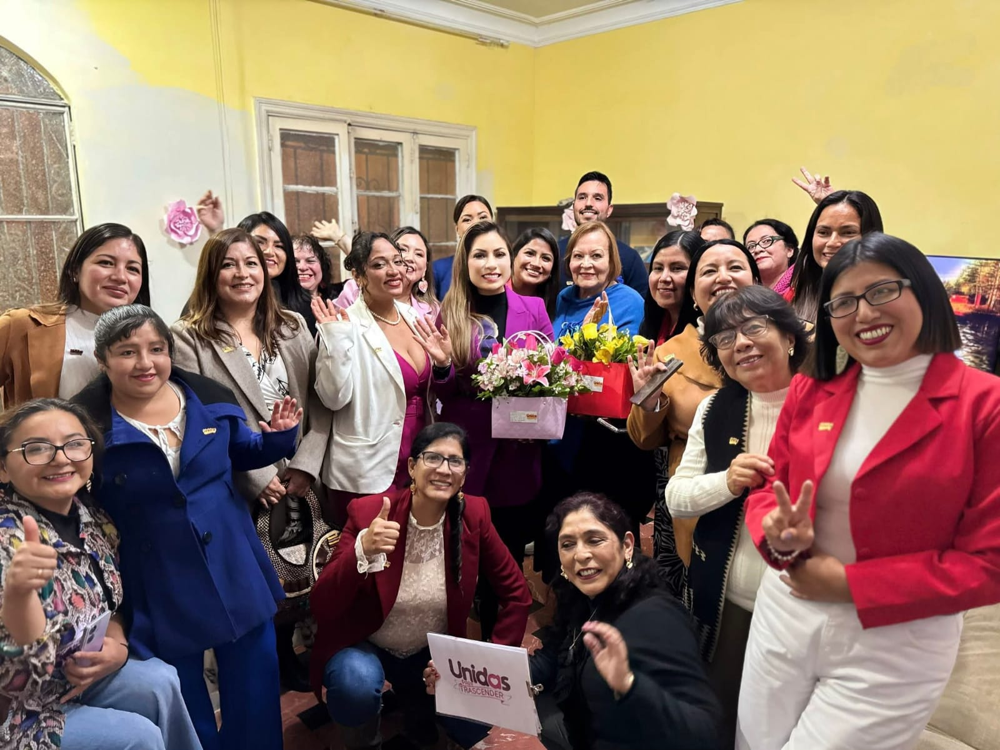

Empoderamiento femenino
Promover que las mujeres reconozcan sus capacidades, desarrollen seguridad personal y se conviertan en protagonistas de sus propias decisiones.
La comunidad de responsabilidad social de LVA Consultoría en Edificaciones.
Una iniciativa de impacto social orientada al empoderamiento femenino, el fortalecimiento del emprendimiento y la generación de oportunidades para las mujeres peruanas. Parte de una convicción: cuando una mujer fortalece su desarrollo personal, profesional y económico, también contribuye al crecimiento de su familia, su comunidad y la sociedad.
“No se trata solo de llegar lejos, sino de ayudar a otras personas a llegar contigo. Creo en mí, en el poder de las alianzas y en que juntas podemos trascender”.
— Deyssi Chávez, fundadora de Unidas para Trascender
Unidas para Trascender es una comunidad de mujeres emprendedoras, empresarias y profesionales que busca construir una red de apoyo, colaboración y crecimiento.
La iniciativa fue impulsada por Deyssi Chávez, CEO de LVA Consultoría en Edificaciones. La comunidad tiene presencia en Lima y Arequipa, y busca conectar a mujeres que desean crecer juntas y alcanzar nuevas oportunidades.
La responsabilidad social empresarial no consiste únicamente en realizar donaciones o actividades solidarias. También implica generar oportunidades, contribuir al desarrollo de las personas y promover cambios positivos en la sociedad. Por eso, LVA complementa su actividad empresarial con Unidas para Trascender.
Promover que las mujeres reconozcan sus capacidades, desarrollen seguridad personal y se conviertan en protagonistas de sus propias decisiones.
Contribuir al crecimiento de emprendimientos y empresas lideradas por mujeres, fomentando oportunidades comerciales y sostenibilidad empresarial.
Conectar emprendedoras, empresarias y profesionales para generar alianzas, relaciones comerciales y oportunidades de colaboración.
Promover el aprendizaje, el intercambio de experiencias, las capacitaciones y el desarrollo de competencias para fortalecer la gestión de los negocios.
Construir una comunidad donde las mujeres se apoyen, compartan conocimientos, visibilicen sus logros y se impulsen mutuamente.

| Dimensión | Impacto esperado |
|---|---|
| Personal | Mayor autoestima y autoconfianza. |
| Profesional | Desarrollo de habilidades y liderazgo. |
| Económica | Crecimiento de emprendimientos y negocios. |
| Social | Redes de apoyo y colaboración. |
| Empresarial | Alianzas estratégicas y oportunidades comerciales. |
En abril de 2025 la comunidad reportaba más de 80 mujeres activas en Lima, Arequipa y otras regiones del Perú.
En LVA Consultoría en Edificaciones creemos que el verdadero crecimiento empresarial va más allá de los resultados económicos: se construye también a través de las oportunidades que somos capaces de generar para nuestra sociedad.
Por ello, impulsamos Unidas para Trascender, una comunidad que nace de nuestro compromiso con la responsabilidad social empresarial y con el propósito de contribuir al empoderamiento, desarrollo y crecimiento de las mujeres emprendedoras, empresarias y profesionales del Perú.
Creemos en el poder de la unión, la colaboración y el conocimiento compartido. Promovemos espacios donde las mujeres puedan fortalecer su confianza, desarrollar sus capacidades, visibilizar sus emprendimientos, generar alianzas estratégicas y descubrir nuevas oportunidades.
Nuestra misión es contribuir a una sociedad donde más mujeres tengan la posibilidad de liderar, emprender, crecer económicamente y transformar sus propias historias.
En LVA Consultoría en Edificaciones entendemos que construir no significa solamente desarrollar proyectos y edificaciones; también significa construir oportunidades, fortalecer comunidades y dejar una huella positiva en las personas.
Unidas para Trascender es más que una comunidad: es una apuesta por el crecimiento colectivo, el liderazgo femenino y la transformación social.
Porque cuando una mujer crece, inspira a otras. Y cuando crecemos juntas, trascendemos.
Somos una comunidad de mujeres emprendedoras, empresarias y profesionales que creen en el poder de crecer, conectar y generar oportunidades juntas. A través de capacitaciones, networking, alianzas estratégicas y espacios de visibilidad, buscamos impulsar el desarrollo personal y empresarial de nuestras integrantes.
Si deseas conocer más y formar parte de nuestra comunidad, completa el formulario. Será una alegría conocer más sobre ti y tu marca.